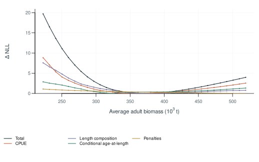
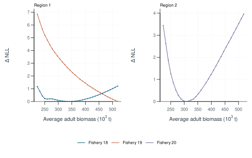
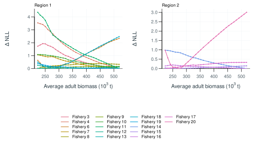
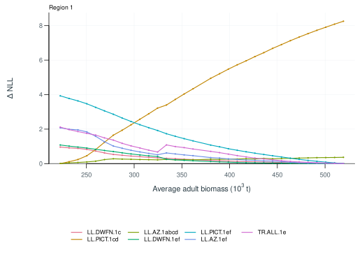
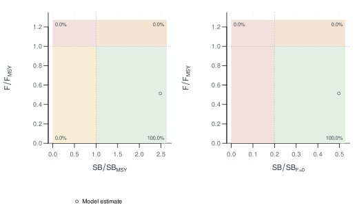
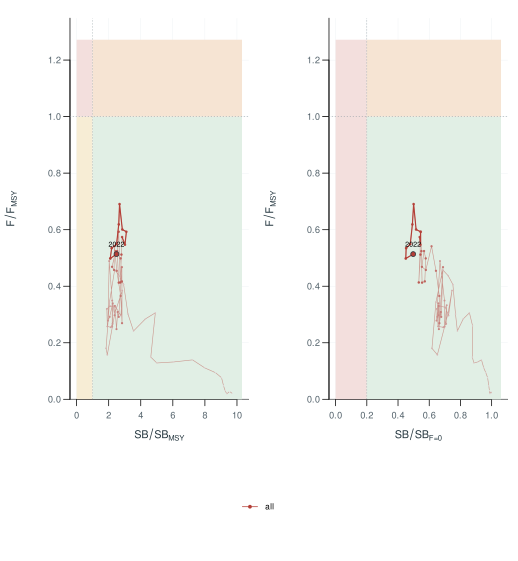
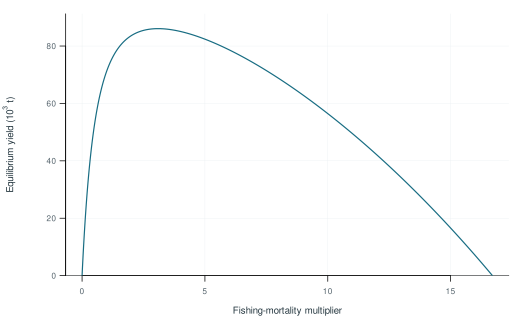
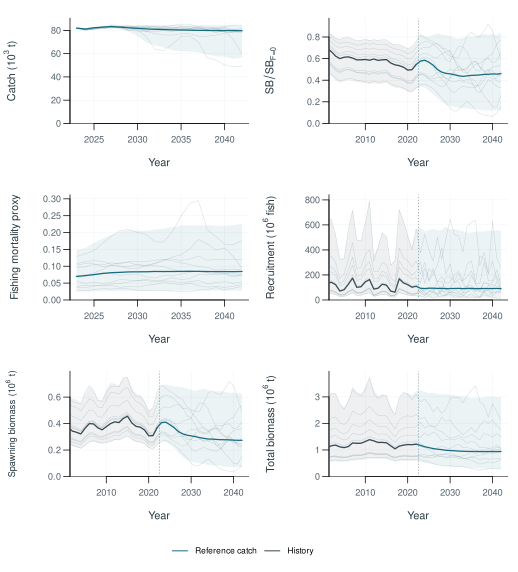
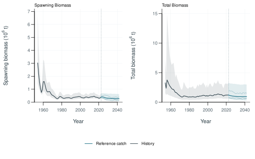

South Pacific albacore 2024: KIMSA assessment
1 Executive summary
2 Introduction
Assessing South Pacific albacore requires a link between what fisheries observe and how the population changes. Catch records describe removals, abundance indices track relative trends, and size samples help resolve the sizes and ages affected by fishing. Biological studies provide the context needed to interpret these observations.
An integrated assessment brings these sources together in a population model. The analysis can then examine changes in recruitment, spawning potential and fishing mortality, and assess stock status against defined reference points. Differences in data coverage and uncertainty in the underlying processes are central to that interpretation.
Each update revisits the population history as well as recent stock status. New observations and revised assumptions can both change earlier estimates. A stepwise comparison helps explain those changes, while sensitivity analyses show how strongly the conclusions depend on particular choices.
3 Background
3.1 Fisheries
Longline fleets take much of the South Pacific albacore catch, while southern surface fisheries target smaller fish. The fleets include distant-water vessels and vessels based in Pacific Island countries and territories. Troll fishing around New Zealand and the subtropical convergence zone, together with historical driftnet catches, forms part of this broader fishery history (Nikolic et al., 2017; Vidal et al., 2021).
These fisheries sample different parts of the population. Their catches and size distributions reflect where and how they operate, as well as changes in fish abundance. This provides a basis for defining fisheries in the assessment.
3.2 Distribution and movement
Albacore occupy a wide range of tropical and temperate habitats. North and South Pacific populations have generally been considered separate stocks, while structure within the South Pacific remains less certain (Anderson et al., 2019; Nikolic et al., 2017). Regional differences in growth, genetics and otolith chemistry help describe that structure (Anderson et al., 2019; Macdonald et al., 2013; Williams et al., 2012).
Tag recoveries and patterns in fish size suggest movement between southern feeding grounds and warmer waters as fish grow. Smaller albacore are common in cooler waters, whereas mature fish occur farther north during the spawning season (Farley et al., 2014; Nikolic et al., 2017). Tagging evidence is uneven across the region because releases, fishing effort and reporting vary in space and time. Seasonal catch patterns provide additional information on distribution (Langley, 2004).
Habitat-based models offer hypotheses about movement and the distribution of recruitment (Lehodey et al., 2015; Senina et al., 2020). These can inform assessment alternatives alongside evidence from fisheries and biological sampling. Region boundaries provide a way to represent spatial variation; they do not necessarily delimit closed populations.
3.3 Depth use and availability to fishing
The depths occupied by albacore affect their availability to different gears. Longline catches tend to come from deeper water in warmer areas, while troll fisheries sample fish near the surface (Bigelow et al., 2006). Electronic tagging has also shown changes in depth through the day and across latitudes (Williams et al., 2015). These behaviours help explain why catchability can vary even when abundance does not.
3.4 Growth
Otolith ages and length-frequency patterns provide complementary views of growth. Surface fisheries sample younger fish, and growth slows as albacore become larger (Farley et al., 2013a; Williams et al., 2012). Differences between sexes and across the South Pacific add variation around the mean growth curve.
The interpretation of age data also depends on ageing methods and the timing of sampling within the year (Farley et al., 2021). Comparisons of growth estimates therefore need to account for which fish were sampled and how their ages were assigned. This is particularly relevant when combining age data with modes in length-frequency samples.
3.5 Reproduction
South Pacific albacore spawn in warm waters during the austral summer. Maturity and reproductive activity vary with latitude and season (Farley et al., 2013b; Farley et al., 2014). A reproductive ogive summarises how the contribution to spawning changes with fish size or age.
Converting that ogive to population spawning potential depends on the treatment of maturity, female proportion, body mass and, where used, fecundity. The resulting quantity may be expressed as biomass or as a relative measure of reproductive output. Its definition is given in Section 5.2.4.
3.6 Natural mortality
Natural mortality is difficult to estimate directly from fishery data. Life history and relationships between mortality and body size can help define plausible age-dependent patterns (Lorenzen, 1996). When those patterns depend on growth, the two sets of assumptions need to be considered together. Their effects on population scale and stock status can then be examined through sensitivity analyses.
4 Data compilation
4.1 Assessment area and data period
Spatial structure links the population being assessed to the areas sampled by fisheries. Population regions describe where fish live and move; fishery strata group observations from similar fishing operations. An areas-as-fleets approach can retain differences among fishing areas within a pooled population (Waterhouse et al., 2014).
4.2 Fisheries and catch
Fishery definitions group observations with similar selectivity and fishing practices. Gear, area, fleet and changes in operations can all inform these groups. Extraction fisheries account for removals, while abundance-index series describe relative population trends.
4.3 Abundance indices
Catch per unit effort (CPUE) reflects both fish abundance and the way a fleet operates. Standardisation aims to account for changes in fishing practices and sampling so that the remaining trend can inform relative abundance. Spatiotemporal methods also account for spatial dependence and combine predictions over a defined area (Thorson et al., 2015). Combining fleets has helped extend the coverage of earlier albacore analyses (Vidal et al., 2021).
4.4 Length composition
Length samples describe the size distribution of fish in the catch. Observer and port-sampling programmes provide much of this information, but their coverage varies among fleets and periods. Fish measured in the same sampling event may also be more alike than fish drawn independently from the catch. Sample construction and likelihood weighting therefore need to be considered together.
4.5 Age observations
Age-length data link measured fish sizes to population age structure. A length-at-age model describes \(P(L\mid A)\); an age-at-length model describes \(P(A\mid L)\). The second also depends on the age distribution of the sampled fish. Bayes’ rule expresses the connection:
\[ P(A=a\mid L=l)= \frac{P(L=l\mid A=a)\,\pi_a} {\sum_b P(L=l\mid A=b)\,\pi_b}, \]
where \(\pi_a\) represents the sampled age distribution, including selectivity where appropriate.
5 Model description
5.1 Model framework
The model connects population change to fishery removals and the observations used in fitting. Population processes determine the numbers of fish available; fishing processes determine which fish are caught; observation models describe how the data relate to those quantities. MULTIFAN-CL is an established example of this integrated approach (Fournier et al., 1998; Hampton and Fournier, 2001; Kleiber et al., 2019).
5.2 Population processes
5.2.1 Recruitment and initial population
Recruitment adds fish to the youngest modelled age class. Its definition links that age class to the timing and spatial distribution of entry into the population. Variation in recruitment can be represented around a mean or a stock-recruitment relationship.
For a Beverton-Holt relationship, steepness describes recruitment at 20% of unfished equilibrium spawning potential relative to unfished equilibrium recruitment (Francis, 1992). This parameter influences the stock’s assumed capacity to replenish itself as spawning potential declines.
5.2.2 Growth and natural mortality
Growth translates population age structure into a distribution of fish lengths. A weight-length relationship then connects fish size to biomass. Variation around mean length at age is important because fish of the same age can occur in several length classes.
Natural mortality governs survival in the absence of fishing. Its time unit must be consistent with the population model, and any dependence on growth must be carried through the biological inputs.
5.2.3 Movement
In a spatial model, movement redistributes fish among regions. The resulting transitions depend on age, season and the sequence of population processes within a time step. Movement rates and transition probabilities describe different parts of that calculation.
5.2.4 Reproductive potential
Spawning potential combines the population at each age or size with its contribution to reproduction. The reproductive ogive determines that contribution and the units of the resulting population measure.
5.3 Fishing processes
Selectivity describes the relative susceptibility of fish of different sizes or ages to a fishery. Catchability links an index to the population it samples or, in an effort-based formulation, links effort to fishing mortality. Their parameterisation determines how fishing operations enter the population model.
5.4 Observation models
Each observation model connects a data source to its predicted quantity and specifies how deviations contribute to the objective. For composition data, the information assigned to a sample depends on its effective sample size and the chosen likelihood. These choices affect the balance among data sources.
5.5 Parameter estimation
Fitting minimises the negative log-likelihood and any additional penalties. Automatic differentiation supplies derivatives for optimisation (Fournier et al., 2012). Numerical convergence and the information available to estimate parameters are examined in Section 7.
6 Model development
6.1 Stepwise development
A stepwise sequence separates the effects of successive changes in data and model assumptions. Comparing both population estimates and data fits helps explain why the updated assessment differs from its starting model.
The sequence of population estimates is shown in Figure 1.
6.2 Sensitivity analyses
Sensitivity analyses examine assumptions that could affect the assessment’s conclusions. Changing one assumption at a time clarifies its influence; combinations of changes reveal interactions. The alternatives should reflect the uncertainties relevant to the data and model.
6.3 Model ensemble
An ensemble brings the selected assumptions together. Its distribution of results depends on the models retained, their weights and the treatment of uncertainty within each model. These decisions define what the ensemble summaries represent.
7 Model diagnostics
7.1 Starting-value trials (jitter)
Jitter trials refit the same model and data from different starting values. Agreement in final objectives and population estimates indicates that the solution is reproducible across those trials. Gradients help distinguish converged solutions from runs that stopped before reaching an optimum.
The corresponding population estimates are shown in Figure 2. Regional depletion is compared in Figure 3.
7.2 Simulation-estimation tests (self-test)
A self-test generates data from a known model and then estimates that model from the simulated observations. Comparing the estimates with their generating values reveals bias and variability in recovery under the assumed processes. Where uncertainty intervals are available, their coverage can also be examined.
Recovery of selected quantities is summarised in Figure 4. Recovery through time is shown in Figure 5.
7.3 Retrospective analysis
Retrospective analysis examines how estimates change as terminal observations are removed. Each reduced-data fit is compared with the full-data fit over their shared years (Cadigan and Farrell, 2005). Repeated shifts in the same direction can reveal a systematic pattern in recent estimates.
Population trajectories for the retrospective fits are compared in Figure 6.
7.4 Hindcast evaluation
Hindcasts assess predictions against observations withheld from fitting. At each cutoff, the model is fitted using the information available up to that point and predicts subsequent observations. The comparison measures predictive performance at the specified horizons.
Predictions and withheld observations are compared in Figure 22. Prediction errors and skill measures are summarised in Table 3.
7.5 Likelihood profiles and identifiability
A profile follows the objective as one parameter or derived quantity is fixed at a sequence of values and the remaining parameters are re-estimated. Separating the objective by data source shows where information is concentrated and where sources favour different values. Total average biomass is one possible measure of population scale for this analysis (McKechnie et al., 2017; Tremblay-Boyer et al., 2017).
The total profile and contributions by data source are shown in Figure 7. Index contributions are shown in Figure 8. Length-composition contributions are shown in Figure 9. Age-data contributions are shown in Figure 10.
8 Results
8.1 Data fit
8.2 Population estimates
The diagnostic model’s population trajectories are shown in Figure 11. Annual recruitment is shown by region and overall in Figure 12. Recruitment allocation among regions and seasons is shown in Figure 13. Regional contributions to population quantities are shown in Figure 14. Biomass under fitted fishing and the no-fishing calculation is compared in Figure 15.
8.3 Robustness and uncertainty
Trajectories from the retained ensemble models are shown in Figure 16.
9 Stock status and interpretation
9.1 Depletion and fishery impact
Dynamic depletion measures spawning potential under fishing relative to a modelled population without fishing at the same time:
\[ D_t=\frac{SB_t}{SB_{t,F=0}}, \]
where \(SB_t\) is spawning potential under the fitted fishing history and \(SB_{t,F=0}\) is its no-fishing counterpart. The comparison accounts for the population variation represented in both trajectories. Its interpretation depends on how recruitment is treated in the no-fishing calculation.
Management measures may use averages over specified periods instead. The numerator, denominator and time windows then define the quantity being reported. Averaging depletion ratios and taking a ratio of mean spawning potentials generally give different results.
9.2 Yield and reference points
Equilibrium yield analysis compares the long-term catch supported by different levels of fishing under a stated fishing pattern and stock-recruitment relationship. Its maximum defines \(\mathrm{MSY}\), with associated quantities \(F_{\mathrm{MSY}}\) and \(SB_{\mathrm{MSY}}\) (Kleiber et al., 2019). These reference points depend on the biological assumptions and the ages exposed to fishing.
Equilibrium yield is shown in Figure 19. Reference-point estimates and definitions are given in Table 1.
9.3 Stock status
Stock-status summaries relate estimated spawning potential and fishing mortality to the chosen reference points. Kobe plots use \(SB/SB_{\mathrm{MSY}}\) and \(F/F_{\mathrm{MSY}}\); Majuro plots use a defined depletion measure alongside \(F/F_{\mathrm{MSY}}\). Ensemble probabilities depend on the weighting of models and the uncertainty included in the comparison.
The stock-status comparison is shown in Figure 17. Changes in stock status through time are shown in Figure 18.
10 Projections
Projections examine how the population could change under specified fishing and recruitment scenarios. The outcomes depend on the control applied, such as catch or fishing mortality, and on the sources of uncertainty carried forward from the assessment.
10.1 Scenarios
10.2 Projected outcomes
Historical and projected trajectories are shown in Figure 20. Projected management quantities are summarised in Table 2.
11 Discussion
11.1 Interpretation
11.2 Limitations
11.3 Conclusions and research priorities
12 Acknowledgements
13 References
14 Tables
| Quantity | Estimate | Unit |
|---|---|---|
| MSY | 86055 | t/year |
| FMSY | 0.14846 | per year |
| BMSY | 579660 | t |
| SBMSY | 136940 | t |
| Scenario | Period | Quantity | Median | 95% interval |
|---|---|---|---|---|
| Reference catch | 2042 | Catch | 79733 | 5.664e+04–8.432e+04 |
| Reference catch | 2042 | Dynamic Spawning Depletion | 0.46049 | 0.1184–0.8391 |
| Reference catch | 2042 | Fishing Mortality Proxy | 0.084509 | 0.02722–0.2258 |
| Reference catch | 2042 | Recruitment | 90321000 | 1.728e+07–5.534e+08 |
| Reference catch | 2042 | Spawning Biomass | 273700 | 7.053e+04–6.297e+05 |
| Reference catch | 2042 | Total Biomass | 943750 | 2.862e+05–2.997e+06 |
| Series | Lead | N | Bias | RMSE | Unit |
|---|---|---|---|---|---|
| F18_R1_G18 | 1 | 5 | 0.013635 | 0.075785 | index |
| F19_R1_G19 | 1 | 5 | 0.43361 | 0.70298 | index |
| F20_R2_G20 | 1 | 5 | -0.13701 | 0.21829 | index |
15 Figures














16 Supplementary outputs
Diagnostic model — interactive viewer
Diagnostic model — figures and tables
ALB 2024 reconstructable model-choice stepwise — interactive viewer
ALB 2024 reconstructable model-choice stepwise — figures and tables
Monte Carlo model ensemble — interactive viewer
Monte Carlo model ensemble — figures and tables
Starting-value trials — interactive viewer
Starting-value trials — figures and tables
Simulation-estimation tests — interactive viewer
Simulation-estimation tests — figures and tables
Retrospective analysis — interactive viewer
Retrospective analysis — figures and tables
Index hindcast — interactive viewer
Index hindcast — figures and tables
Average adult biomass likelihood profile — interactive viewer
Average adult biomass likelihood profile — figures and tables
Reference catch projection — interactive viewer
Reference catch projection — figures and tables
Prepared with KIMSA companion tools · Developed by Kyuhan Kim